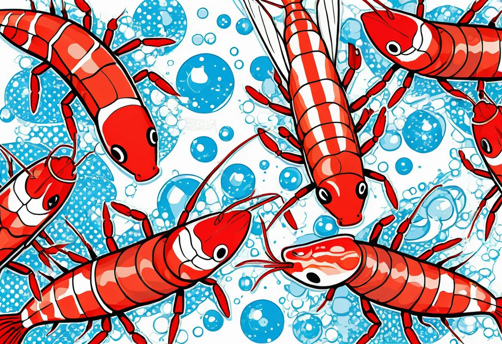

Warum Garnelen?
Garnelen sind die heimlichen Stars vieler Aquarien. Sie sind pflegeleicht, benötigen wenig Platz und sind in faszinierenden Farbvarianten erhältlich – von leuchtendem Rot (Red Cherry) über tiefes Blau (Blue Dream) bis zu gestreifte Musterungen (Tiger Garnelen). Zudem sind sie hervorragende Algenvertilger und beleben den Bodengrund.
Die beliebtesten Arten für Einsteiger
Nicht alle Garnelenarten stellen die gleichen Ansprüche. Für Anfänger besonders geeignet:
Neocaridina davidi (z. B. Red Cherry Garnelen)
Der absolute Klassiker! Diese Garnelen sind extrem robust, vermehren sich leicht und verzeihen kleinere Pflegefehler. Wassertemperatur: 18–28 °C, pH: 6,5–8,0. Ideal für Einsteiger.
Caridina cf. cantonensis (z. B. Red Bee Garnelen)
Die Königinnen unter den Zwerggarnelen. Sie brauchen weicheres, leicht saures Wasser (pH 6,0–6,8, Leitwert unter 250 µS) und sind etwas empfindlicher. Dafür belohnen sie mit atemberaubenden Zebra-Mustern.
Caridina multidentata (Amano-Garnelen)
Die besten Algenputzer überhaupt. Sie werden etwas größer (bis 5 cm) und können sich im Süßwasser nicht vermehren, da die Larven Brackwasser benötigen. Sehr friedlich und aktiv.
🛒 Garnelen kaufen – Starterset
Gesunde Zuchtgarnelen und passendes Zubehör für den perfekten Start.
👉 Garnelen & Zubehör bei AmazonDie richtige Beckengröße
Für Zwerggarnelen reicht bereits ein Nano-Becken ab 10 Litern. Optimal sind 20–60 Liter. Wichtig ist eine gute Bepflanzung mit Moos (Java-Moos, Christmas-Moos) und feinfiedrigen Pflanzen, die den Garnelen Versteckmöglichkeiten und Weidefläche bieten.
Wasserwerte für Garnelen
Die Wasserqualität ist das A und O der Garnelenhaltung. Wöchentliche Messungen sind Pflicht:
- Temperatur: 22–26 °C (Neocaridina), 20–24 °C (Caridina)
- pH-Wert: 6,5–7,5 (Neocaridina), 6,0–6,8 (Caridina)
- Gesamthärte (GH): 6–12 °dGH (Neocaridina), 3–6 °dGH (Caridina)
- Karbonathärte (KH): 3–8 °dKH (Neocaridina), 0–2 °dKH (Caridina)
- Leitwert: 300–500 µS/cm (Neocaridina), 100–250 µS/cm (Caridina)
Ein Tropfen-Testkit ist genauer als Teststreifen. Für Caridina-Haltung empfehlen wir eine Osmoseanlage.
Vergesellschaftung mit anderen Tieren
Garnelen sind friedliche Fluchttiere und sollten nicht mit größeren oder räuberischen Fischen vergesellschaftet werden. Gut geeignet sind:
- Microbuntbarsche (z. B. Apistogramma borellii – aber vorsichtig, sie fressen Nachwuchs)
- Kleine Salmler (Neonsalmler, Rote von Rio)
- Otocinclus (Ohrgitterharnischwelse) – perfekte Algenfresser
- Schnecken (Posthornschnecken, Turmdeckelschnecken)
Nicht geeignet: Skalare, Diskus, größere Buntbarsche, Mollys, Schwertträger – sie sehen Garnelen als Futter an.
Fütterung
Garnelen sind Allesfresser und nehmen sowohl pflanzliche als auch tierische Nahrung auf. Spezielles Garnelenfutter (Sticks, Granulat, Snacks) ist ideal. Ergänzend darf es geben:
- Überbrühte Gemüsestücke (Zucchini, Gurke, Spinat) – 1× pro Woche
- Laub (Seemandelbaumblätter, Buchenlaub) – für Gerbstoffe und Mikroorganismen
- Proteinhaltiges Futter – max. 1× pro Woche für die Häutung
Wichtig: Nicht überfüttern! Futterreste belasten das Wasser und führen zu Problemen.
Häutung und Vermehrung
Garnelen wachsen nur durch regelmäßige Häutung. Nach der Häutung sind sie kurzzeitig weich und verletzlich – Versteckmöglichkeiten sind daher überlebenswichtig.
Die Vermehrung bei Neocaridina ist einfach: Bei guten Bedingungen tragen die Weibchen alle 4–6 Wochen Eier unter dem Hinterleib („Schwimmen“). Nach etwa 3–4 Wochen schlüpfen fertige Mini-Garnelen, die sofort wie die Erwachsenen fressen. Caridina-Arten sind etwas anspruchsvoller, vermehren sich aber bei passenden Wasserwerten ebenfalls regelmäßig.
Ein gut eingefahrenes Garnelenbecken ist ein Kreislauf, der fast von selbst läuft. Die größte Hürde ist die Anfangszeit – danach wirst du dich bald über eine wachsende Garnelenpopulation freuen.
Krankheiten und Probleme
Die häufigsten Probleme in der Garnelenhaltung:
- Verkorkte Häutung (White Ring of Death): Weißer Ring am Panzer – oft durch Nährstoffmangel oder zu weiches Wasser. Mit Mineralstoffpräparaten vorbeugen.
- Bakterielle Infektionen: Trübe Stellen, Antriebslosigkeit. Meist folge von Stress oder schlechter Wasserqualität.
- Planarien und Hydra: Kleine Schädlinge im Becken. Weniger füttern, regelmäßiger Wasserwechsel, bei Bedarf mit Fugentabletten behandeln.
Vorbeugung ist der beste Schutz: Regelmäßige Wasserwechsel, nicht überfüttern, konstante Wasserwerte.
🛒 Garnelen-Pflegeprodukte
Wasseraufbereiter, Mineralstoffe und Spezialfutter für gesunde Garnelen.
👉 Pflegeprodukte bei Amazon entdeckenFazit
Garnelen sind eine hervorragende Wahl für Einsteiger und erfahrene Aquarianer gleichermaßen. Sie benötigen wenig Platz, sind faszinierend zu beobachten und vermehren sich bei guten Bedingungen von selbst. Mit stabilen Wasserwerten, viel Moos und einer durchdachten Vergesellschaftung wirst du lange Freude an deinen kleinen Krebsieren haben.
Mehr zur Einrichtung eines Garnelenbeckens erfährst du in unserem Einsteiger-Guide.